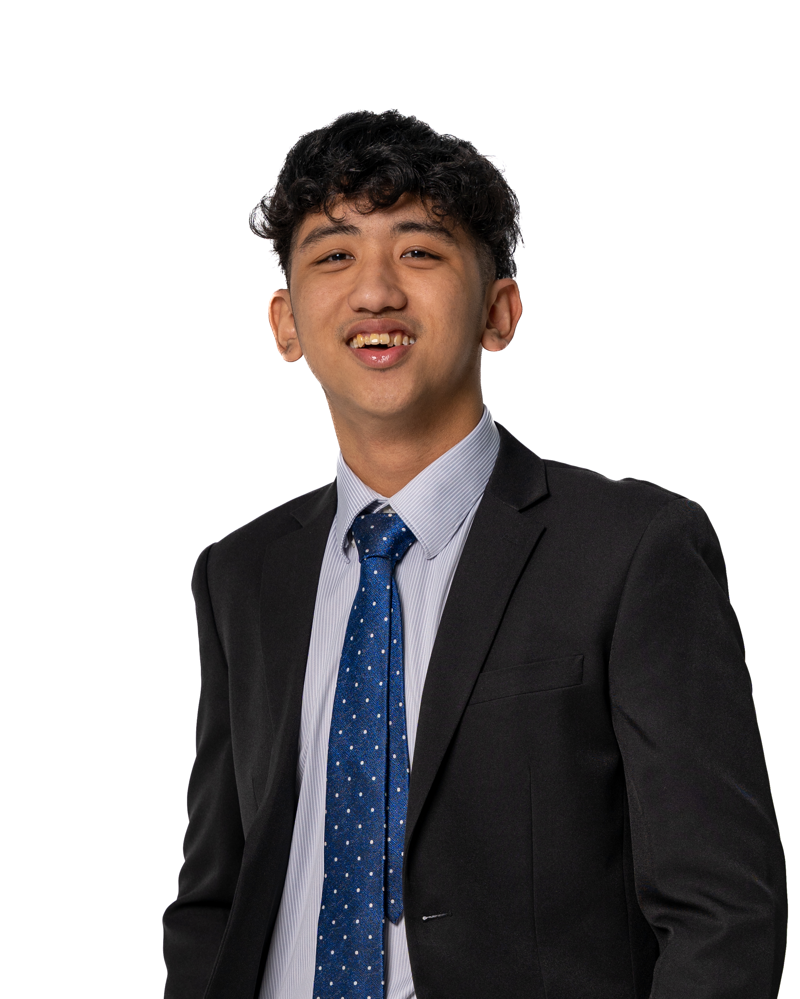

Foreword
At our university, student life is not just a chapter, it's the essence of our journey. We're more than just learners; we're creators of memories and champions of lifelong friendships. Computing Club has enriched my student life, proving that we're not just dull techies, but vibrant souls with passions beyond codes.
Today, we stand at a pivotal moment. Embrace the need for inclusivity, reflecting the tapestry of our diverse student body. Let's break the shackles of stereotypes, proving that we're anything but boring. Run for the 26th Management Committee Elections, and let's defy stereotypes together!
Ignite change. Redefine tomorrow.
Matthew Simon Castenada
Returning Officer | President
25th Management Committee
The annual election marks the exciting end and beginning of a Management Committee. It is my honour and privilege to serve and lead as the Returning Officer of the Elections Committee. This year, the Elections Committee aims to maximise our outreach and involvement from the student body through various modes of publicity efforts. With the pandemic easing up, we are also looking to incorporate the physical elements of the Elections, including polling. Throughout the process, the Elections Committee will strive to uphold the integrity of the election. We encourage all the School of Computing students to cast their votes on election polling day, and play your part in deciding the direction of your Student Life for the next one year. In the coming weeks, we shall look forward to your nominations, votes, and active participation, as we embark on this journey of passing on the torch to the next batch of changemakers.

Tan Matthew Simon Castaneda
Returning Officer | President
25th Management Committee
Elections Committee